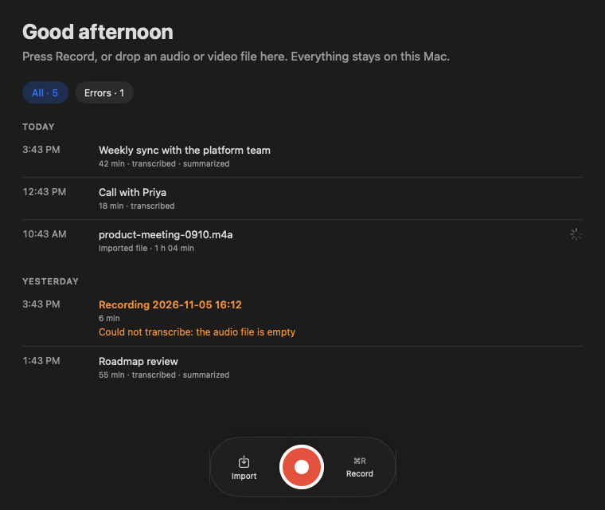
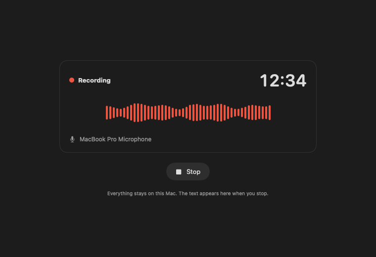
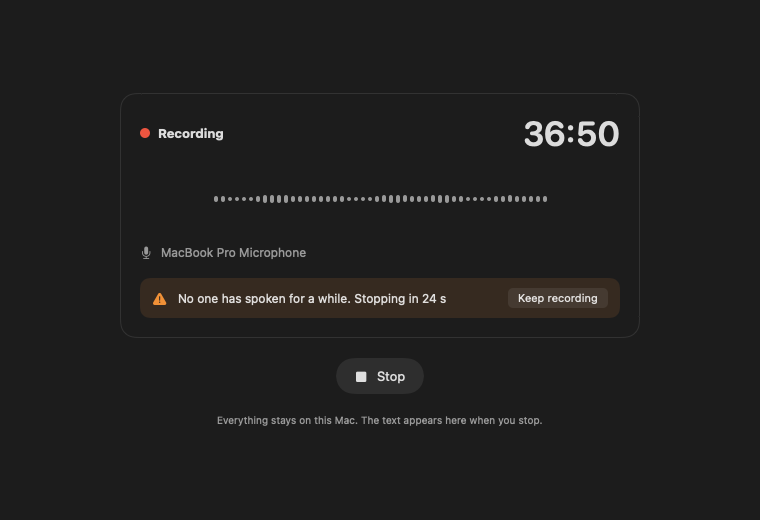
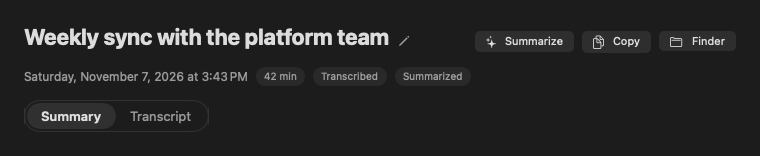
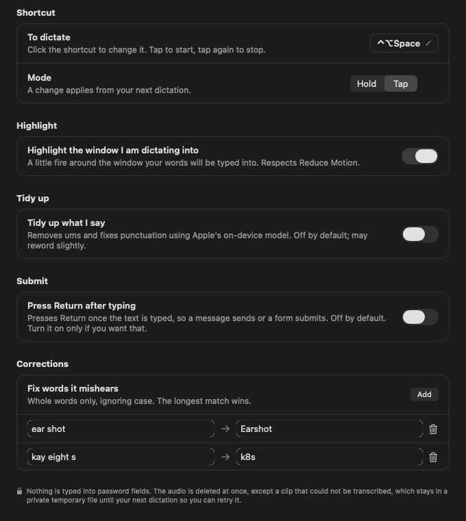
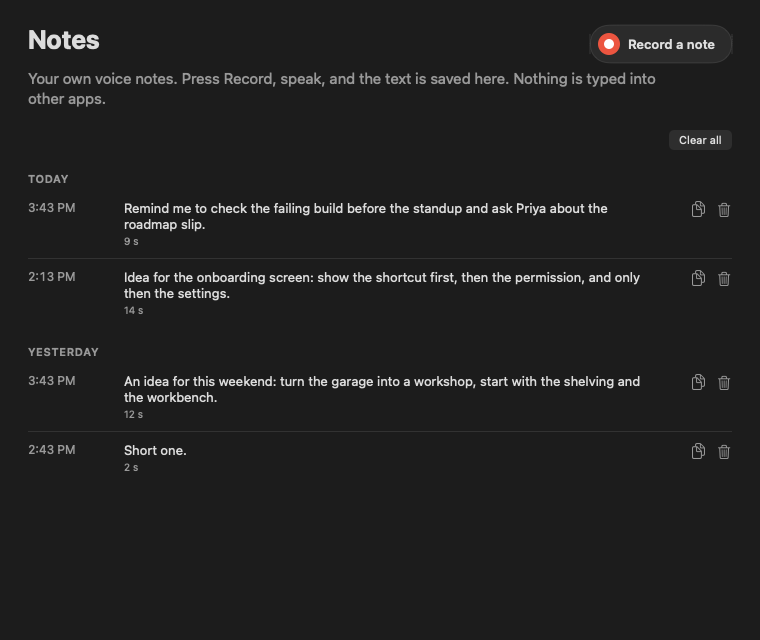
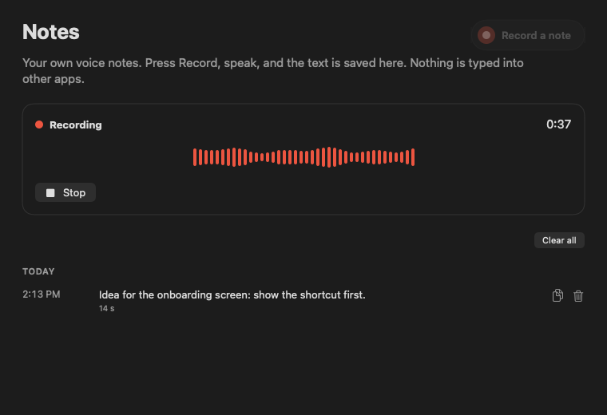
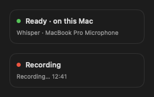

Recordings
Record a meeting or call, or drop in an audio or video file. You get a transcript with speaker labels and a summary.
Earshot for Mac
Earshot records a meeting, writes the transcript, labels who spoke and drafts the summary, all with models running on this Mac. Hold a shortcut in any app and it types what you say.
Download for Mac View on GitHub
Requires a Mac with Apple silicon and macOS 26.4 or later.

Record a meeting or call, or drop in an audio or video file. You get a transcript with speaker labels and a summary.
Your own voice notes. Speak, press Stop, and the text is saved in a list. Nothing is typed into other apps.
Hold a shortcut in any app, speak, let go, and Earshot types what you said where your cursor is. It is off until you turn it on in Settings.
Summaries come from a small model. Check names and numbers before you share one.



Click into any text field, hold the shortcut (Control, Option, Space unless you change it), speak, and let go. A second or two later the text appears where your cursor is.
Dictation keeps nothing: no text and no audio is saved. The audio is deleted at once, except a clip that could not be transcribed, which waits in a private temporary file so you can retry it. Earshot will not type into password fields.
The fire outline and the pill appear only while you dictate, so they are not in the screenshots on this page.

Notes is its own area, separate from Recordings. Press Record a note, speak, and press Stop. It is transcribed on this Mac and saved in a list grouped by day, with Copy and Delete on each note.
Only the text is kept. The audio is deleted at once.


Every model Earshot uses runs locally: Whisper for speech, a voice model for speakers, and Apple's on-device model for summaries and for the optional tidy-up. There is no account and no cloud. Turn off Wi-Fi and it all still works once the models and speaker packages are downloaded. Earshot never uses Apple's Private Cloud Compute. Nothing leaves this Mac because of Earshot.

Two optional features involve an AI agent, and the agent is outside that promise.
scripts/earshot-mcp is a small stdio server that lets an agent read your recordings. It starts no daemon, opens no port and uses no network. It exposes four read-only tools: list_recordings, get_transcript, get_summary and search. The agent you connect it to receives that text, and may send it to its own provider.scripts/earshot-speak is a Stop hook that reads Claude's reply aloud using the macOS say command, locally. It is off until you turn it on. Claude Code itself is an agent with its own provider, which is outside Earshot's promise. Anyone nearby can hear the replies.Connecting an agent is your choice.
You need: a Mac with Apple silicon (M1 or later), macOS 26.4 or later, Apple Intelligence turned on (for summaries), Homebrew, and about 3 GB of free disk space for the models.
brew install whisper-cpp ffmpeg uv# Speech to text
mkdir -p ~/Models/whisper && cd ~/Models/whisper
curl -LO https://huggingface.co/ggerganov/whisper.cpp/resolve/main/ggml-large-v3-turbo.bin # 1.6 GB, required
curl -LO https://huggingface.co/ggml-org/whisper-vad/resolve/main/ggml-silero-v5.1.2.bin # 1 MB, skips silence
curl -LO https://huggingface.co/ggerganov/whisper.cpp/resolve/main/ggml-large-v3-q5_0.bin # 1.1 GB, only for Translate
# Speaker labels
mkdir -p ~/Models/speakers && cd ~/Models/speakers
curl -L https://github.com/k2-fsa/sherpa-onnx/releases/download/speaker-segmentation-models/sherpa-onnx-pyannote-segmentation-3-0.tar.bz2 | tar xj
curl -LO https://github.com/k2-fsa/sherpa-onnx/releases/download/speaker-recongition-models/wespeaker_en_voxceleb_resnet34_LM.onnxgit clone https://github.com/gaberger/earshot.git, then cd earshot, then bash EarshotApp/build.sh. It installs Earshot.app in ~/Applications.Earshot is not notarized by Apple, so macOS says it cannot check the disk image app. Click Done, open System Settings, then Privacy & Security, scroll down and click Open Anyway. An app you built yourself opens normally.
The first speaker detection downloads about 30 MB of Python packages (sherpa-onnx) into uv's cache. You can do it now while online:
uv run --quiet --script /Applications/Earshot.app/Contents/Resources/speakers --helpUse ~/Applications/Earshot.app if you built from source. After that nothing needs the internet.
The first time you record, macOS asks for the microphone; click Allow. Dictation also asks for Accessibility, which is what lets Earshot type for you. After an update, macOS may forget the Accessibility permission; switch Earshot off and on again in the Accessibility list.